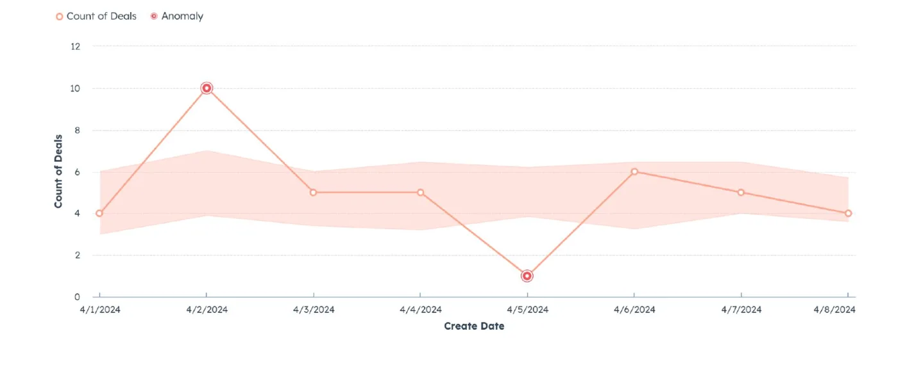
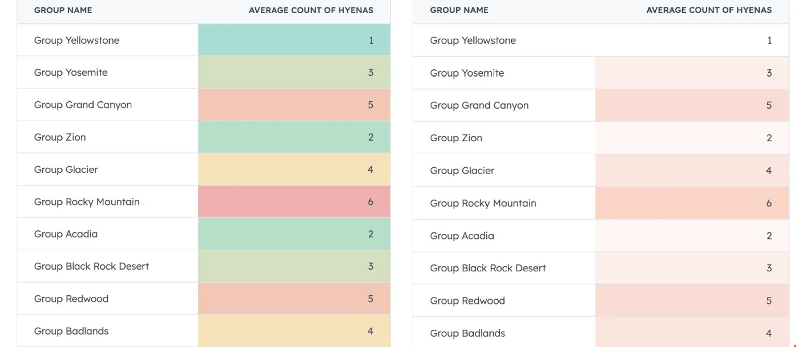
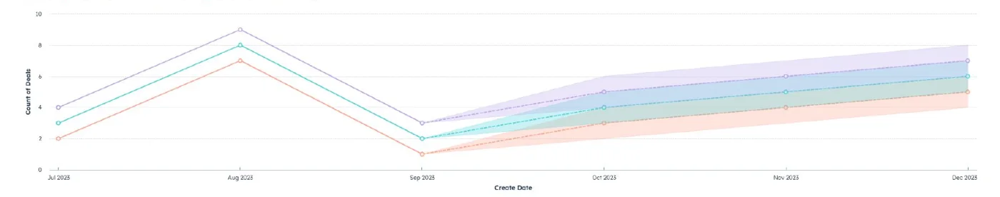
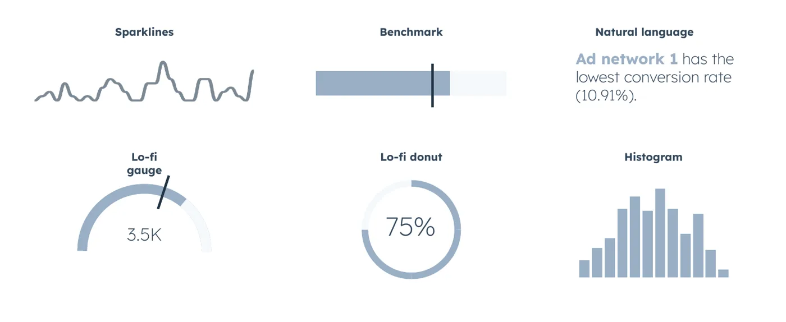
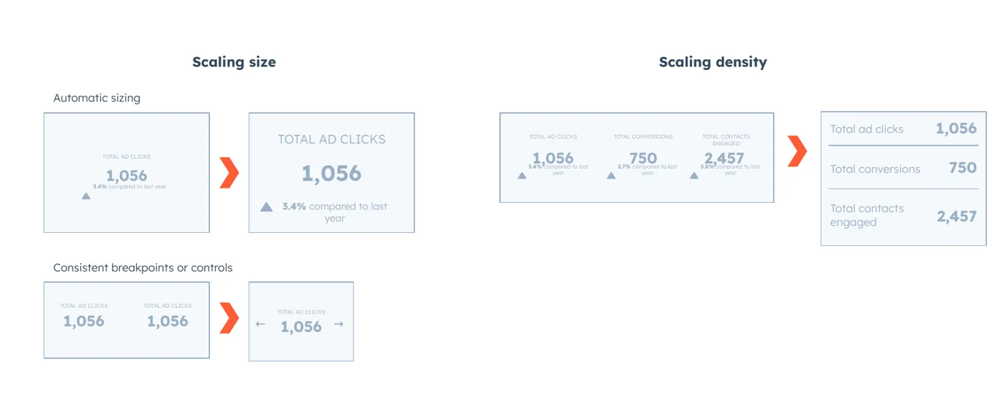
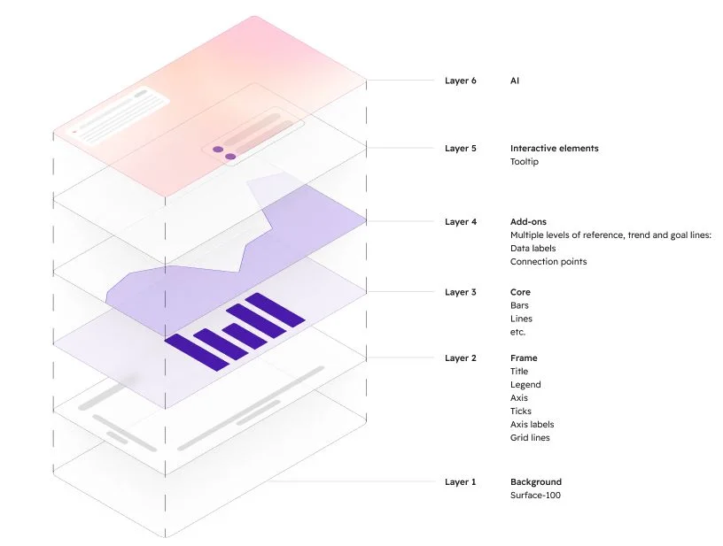
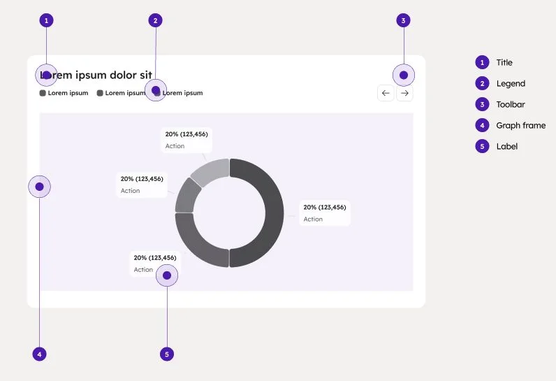
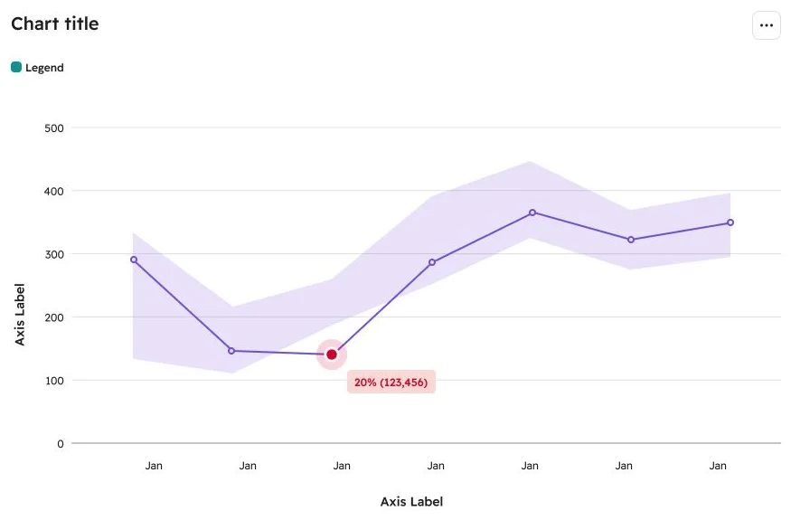
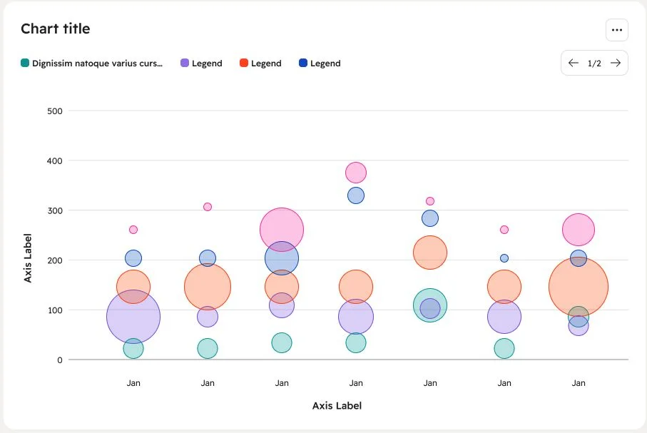

Users had more data than ever, and less idea what it meant.
A recurring theme in customer feedback was how hard it was to pull meaningful insights out of reports and dashboards. The library rendered charts faithfully, but it offered no opinion about what mattered.
"Currently the reporting feels very rigid and doesn't let me get an insight on what's really happening."
HubSpot customer
Our 2023 Kano survey (105 responses) showed why this mattered to the business. NPS was strongly correlated with HubSpot's ability to help users make good decisions (r = .71).
The goal was clear: help users understand their data and get value from reporting faster, without asking them to build new reports or become data experts.
Layers of context that sit on top of any report.
Display options add meaning to a chart without changing the report underneath. With my product partners, I set the requirements up front and was just as explicit about what we would not build. That is what "consumer grade" meant to us.
- Add context to an existing report
- Work without building a new report
- Apply across the whole platform
- Work for internal and external teams
- Be controlled from the report itself
- Require deep technical expertise
- Disrupt existing workflows
- Serve only one persona
- Force big changes to other reporting surfaces
What we shipped
Trend lines
Linear and logarithmic lines that answer time-based questions like "how have our sales grown this year?" at a glance.
Conditional formatting
Diverging and sequential color scales in tables that use pre-attentive processing to point attention to what matters.
Anomaly detection
A model-driven expected range that flags points that statistically stand out. It was first built for Data Quality, and we brought it to the whole platform.
AI Smart Trends
AI forecasts of future values for single and multi-dimension data, shown in the same frame as the observed data.

1 2 3- 1Anomaly above rangeSame shape as a normal point, with rings in the warning color so it reads as the primary data.
- 2Anomaly below rangeLow outliers get the same treatment, because a drop can matter as much as a spike.
- 3Expected rangeThe model's likely values in the chart's own color, kept visually secondary.


One decision per element, so every team's charts look like they belong together.
New display options kept arriving from different teams. Instead of reviewing each one, I wrote design guides any team could follow, built on the team mission, "visualizations that tell effective data stories at scale," and four principles:
Hierarchy
Separate primary data from secondary context.
Highlight
Show what is most important first.
Have an opinion
Tell a story, don't just plot points.
Scale
Solve specific problems for broad use cases.
The specs, rebuilt
Expected ranges
An area in the chart's own color at 60% transparency. It stays secondary to observed data, shows past and future in one chart, and works with custom palettes.
Expected values
A dashed line in the same color as the observed values. Used for trend lines and forecasts, and it can sit inside an expected range.
Anomalies
Same shape and size as an observed point, plus multiple rings in the warning red. Anomalies can be the primary data point, so they are allowed to stand out.
Continuous color palettes
Reuse HubSpot's existing warning and reporting colors instead of inventing new ones. In tables they run at 50% opacity so regular text and links keep their contrast.
The same chart can't serve a report viewer and a CRM card.
As reporting spread across HubSpot, the same chart showed up in the report viewer, on dashboards, on homepages, in workspaces and on CRM cards. Our library was powerful but one-size-fits-all, which made it harder to deliver easy, fast and unified experiences in each place.
I mapped each context by the job to be done, from deep analysis to getting a task done.
One report configuration, three ways to fit
Multiple modes
The same report as a sparkline, gauge, benchmark, natural-language sentence or full chart.
Configurability
Components that teams and end users can tune to the data density they need.
Scaling to size
Components that respond to their container, scaling both size and data density.


Prioritizing with partner teams
I shared the concepts with the teams that build reporting into their own spaces and asked them to help rank priorities. Datawells came out on top. They were second only to tables in usage but had fallen the furthest behind: no scaling, limited configurability and no multiple modes. Without support, teams would keep building their own off-platform "reporting" datawells.
A new chart anatomy with a place for AI built in.
When Trellis, HubSpot's design system, got a facelift, the visualization library needed one too. I worked between the Trellis team and an outside agency to define the future of HubSpot's data visualization components: new color palettes, a new chart anatomy, a new language for charts, and a defined place for AI and display options so they feel like one cohesive reporting experience.




More context, more retention.
Less engaged users (under 50 hovers a month) who turned on trend lines had 10–13% higher two-week retention than those who did not. Anomaly detection and AI Smart Trends moved into beta in fall 2024, the contextual work set datawells as the library's next priority, and the redesign carried into 2025.
What I learned
Defining "consumer grade" kept the roadmap on context for everyone, not power features for a few.
One clear decision per element let other teams ship display options that look like they belong together.
Building one report configuration for many contexts made the library valuable to every team that shows data.